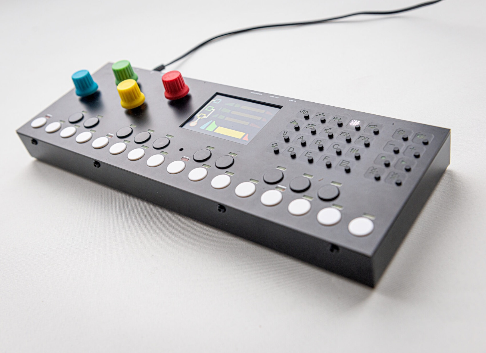

Digital hardware groovebox, with synths, samplers, effects and a sequencer with an audio looper.

The interface is flat, modular and easy to use, but most of all, it aims to encourage experimentation. The workflow is intended to be minimalistic with a minimum of menu-diving and everything at most a couple of intuitive button presses away. The OTTO is open source (except for commercial use), and we value our community highly! Hardware repo
All DB data
- Name: OTTO
- Author: Bitfield Audio
- Link: https://github.com/bitfieldaudio/OTTO
- Demo: https://www.youtube.com/watch?v=nBDd2tuIafM
- Picture: ../pics/otto.jpg
- Description: Digital hardware groovebox, with synths, samplers, effects and a sequencer with an audio looper.
- Notes: The interface is flat, modular and easy to use, but most of all, it aims to encourage experimentation. The workflow is intended to be minimalistic with a minimum of menu-diving and everything at most a couple of intuitive button presses away. The OTTO is open source (except for commercial use), and we value our community highly! Hardware repo
- Artifacts: {“Schematic”=>true}{“PCB”=>true}{“BOM”=>false}{“FW”=>true}{“Docs”=>false}{“Enclosure”=>false}
- Tags: PolyphonicDigital
- Level: Intermediate
{kind=link}